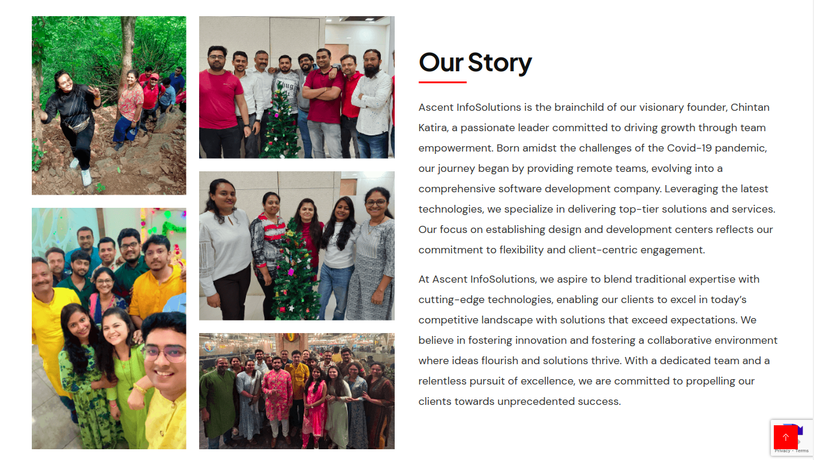
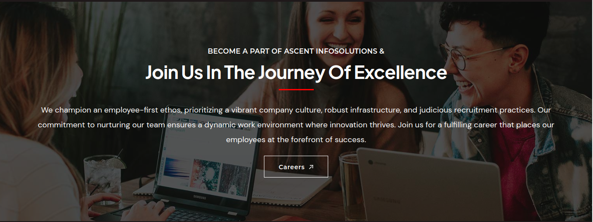

Implemented features for Web Accessibility
- Semantic HTML to implementation of Structure Web pages
- Adding ARIA Roles
- Establishing ARIA Relationships
- Use the “lang” Attribute for Better Accessibility
- The Importance of Heading Levels for Assistive Technology
About Us
We are a company dedicated to creating accessibleand user-friendly websites. We believe everyone deserves a positive web experience.
Ascent InfoSolutions is the brainchild of our visionary founder, Chintan Katira, a passionate leader committed to driving growth through team empowerment. Born amidst the challenges of the Covid-19 pandemic, our journey began by providing remote teams, evolving into a comprehensive software development company. Leveraging the latest technologies, we specialize in delivering top-tier solutions and services. Our focus on establishing design and development centers reflects our commitment to flexibility and client-centric engagement.
At Ascent InfoSolutions, we aspire to blend traditional expertise with cutting-edge technologies, enabling our clients to excel in today’s competitive landscape with solutions that exceed expectations. We believe in fostering innovation and fostering a collaborative environment where ideas flourish and solutions thrive. With a dedicated team and a relentless pursuit of excellence, we are committed to propelling our clients towards unprecedented success.